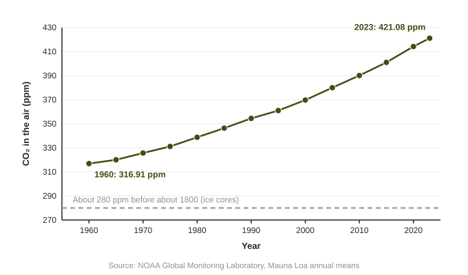

Increases in the Greenhouse Gases
Burning fossil fuels and clearing forests add CO₂; livestock, rice paddies, landfills and gas leaks add methane; fertilizer adds nitrous oxide.
Part 1 · Hook
Why this matters
Part 2 · Before you start
What this builds on
Part 3 · Prerequisite check
Quick check before you start
1. What is the global warming potential of a gas?
- The heat it traps compared with the same mass of CO₂
- How fast it destroys ozone
- How much of it is in the air
- How toxic it is to breathe
Show the answer
GWP compares heat trapped with CO₂, which is set at 1.
- Correct: The heat it traps compared with the same mass of CO₂:
- How fast it destroys ozone:
- How much of it is in the air:
- How toxic it is to breathe:
2. Which of these is a greenhouse gas?
- Methane
- Sulfur dioxide
- Nitrogen gas
- Oxygen gas
Show the answer
Methane absorbs infrared; the others do not act as greenhouse gases.
- Correct: Methane:
- Sulfur dioxide:
- Nitrogen gas:
- Oxygen gas:
Part 4 · See it
See it first

Part 5 · Step by step
How it works, step by step
- People burn fossil fuels and clear forestscarbon stored for ages enters the air as CO₂
- Livestock, rice paddies, landfills and gas leaksadd methane; fertilizer adds nitrous oxide
- Sinks such as plants and the ocean absorb only part of each year’s emissionsthe concentration of greenhouse gases keeps rising
- Ice cores and the Keeling curve measure past and present airthey show CO₂ above 420 ppm, far above its 800,000-year range
Part 6 · Key ideas
Key ideas
- CO₂ sources: burning fossil fuels (largest), deforestation, cement. Methane: livestock, rice paddies, landfills, natural gas leaks. Nitrous oxide: fertilizer and manure.
- The Keeling curve: CO₂ measured at Mauna Loa since 1958. It rises every year, faster each decade, with a small yearly wiggle from Northern Hemisphere plants.
- Ice cores hold bubbles of ancient air: CO₂ stayed between about 180 and 300 ppm for 800,000 years and was about 280 ppm before 1800.
- Today: over 420 ppm, about 50% above the level before 1800.
Part 7 · Misconception
A common mistake
The wrong idea: The yearly ups and downs in the Mauna Loa record mean CO₂ is not really rising.
What actually happens: The small yearly cycle comes from plants growing in the Northern Hemisphere summer. Under it, the average rises every year, from about 317 ppm in 1960 to about 421 ppm in 2023.
Part 8 · Check yourself
Check yourself
Exam-style questions. Anything you miss goes into your review queue.
1. What is the Keeling curve?
- CO₂ measured at Mauna Loa since 1958
- A graph of ozone over Antarctica
- A dose-response curve for carbon dioxide
- A map of global surface temperatures
Show the answer
The Keeling curve is the continuous record of atmospheric CO₂ at Mauna Loa Observatory, Hawaii, begun in 1958.
- Correct: CO₂ measured at Mauna Loa since 1958: Right: Charles David Keeling began the measurements in Hawaii in 1958.
- A graph of ozone over Antarctica: Ozone records are a different data set.
- A dose-response curve for carbon dioxide: It is a record of CO₂ in the air over time, not a toxicity curve.
- A map of global surface temperatures: It tracks CO₂ concentration, not temperature.
2. How do scientists know how much CO₂ was in the air 10,000 years ago?
- Measurements at Mauna Loa
- Air bubbles trapped in ice cores
- Counting tree rings in living trees
- Satellite images of the ozone layer
Show the answer
Snow that turns to ice traps tiny bubbles of air; drilling ice cores in Antarctica and Greenland samples air hundreds of thousands of years old.
- Measurements at Mauna Loa: Mauna Loa measurements began in 1958.
- Correct: Air bubbles trapped in ice cores: Right: bubbles in old ice hold samples of past air.
- Counting tree rings in living trees: Tree rings show past growth and climate, not air samples.
- Satellite images of the ozone layer: Satellites began in the 20th century and image ozone, not ancient air.
Data
Carbon dioxide at Mauna Loa, 1960 to 2023
| Year | CO₂ (ppm) |
|---|---|
| 1960 | 316.91 |
| 1970 | 325.68 |
| 1980 | 338.76 |
| 1990 | 354.45 |
| 2000 | 369.71 |
| 2010 | 390.10 |
| 2020 | 414.21 |
| 2023 | 421.08 |
3. Write the setup for the percent change in CO₂ at Mauna Loa from 1960 to 2020, then the answer.
Type the setup as on the exam, with brackets and units, then the answer.
Show the answer
- Setup: ; answer 30.7 %
4. What was the average rate of increase in CO₂ from 2000 to 2020, in ppm per year?
Type a number, then its unit (ppm/yr). Scale words (2.5 million) and powers of ten (2.5 × 10^6) are read.
Show the answer
- Answer: 2.225 ppm/yr
5. How did the yearly rise in CO₂ in the 1960s compare with the 2010s?
- Slower: about 0.9 then and 2.4 ppm a year now
- It was faster: CO₂ rose most quickly in the 1960s
- It was the same: about 2 ppm a year in both
- CO₂ fell in the 1960s and rose in the 2010s
Show the answer
The curve is not just rising; it is getting steeper, because yearly emissions have grown.
- Correct: Slower: about 0.9 then and 2.4 ppm a year now: Right: (325.68 − 316.91) ÷ 10 ≈ 0.9 and (414.21 − 390.10) ÷ 10 ≈ 2.4 ppm a year.
- It was faster: CO₂ rose most quickly in the 1960s: The 1960s rise was the smallest per decade in the table.
- It was the same: about 2 ppm a year in both: The 1960s rate was under 1 ppm a year.
- CO₂ fell in the 1960s and rose in the 2010s: CO₂ rose in every period in the table.
6. Which conclusion do the data best support?
- CO₂ rose because the ozone hole grew
- CO₂ rose each period, faster over time
- CO₂ will level off before 2030
- CO₂ in 2023 was about twice the 1960 value
Show the answer
Describe trends with numbers: about 317 ppm in 1960 to 421 ppm in 2023, rising faster each decade.
- CO₂ rose because the ozone hole grew: The ozone hole does not add CO₂ to the air.
- Correct: CO₂ rose each period, faster over time: Right: every value is higher than the last, and each decade’s rise is larger.
- CO₂ will level off before 2030: The data show no sign of leveling off.
- CO₂ in 2023 was about twice the 1960 value: 421.08 is about 1.33 times 316.91, not twice.
7. Explain how burning coal for electricity raises the concentration of CO₂ in the atmosphere.
Build the answer part by part, then write it in your own words.
Show the answer
Coal is ancient stored carbon. Burning moves it to the air faster than natural sinks can take it back.
- An answer that earns the point: Burning coal releases carbon that was stored underground for millions of years as CO₂, which increases CO₂ in the air faster than plants and the ocean can remove it, because these sinks absorb only part of each year’s emissions.
Part 9 · Summary
Summary
Part 10 · Up next
What comes next
Part 11 · Connections